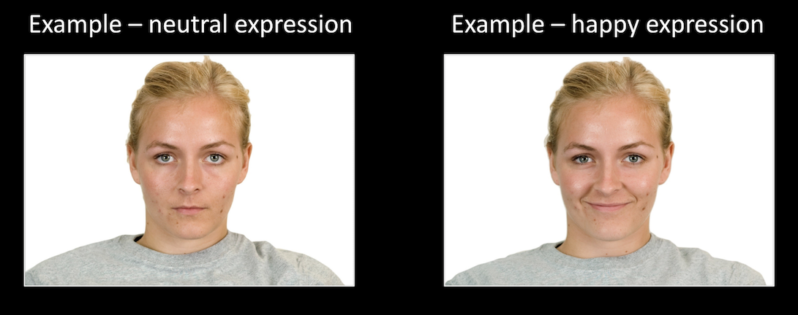

<!DOCTYPE html>
<html>
  <head>
    <title>My experiment</title>
    <script src="jspsych-6.1.0/jspsych.js"></script>
    <script src="jspsych-6.1.0/plugins/jspsych-html-keyboard-response.js"></script>
    <script src="jspsych-6.1.0/plugins/jspsych-image-keyboard-response.js"></script>
    <script src="jspsych-6.1.0/plugins/jspsych-html-slider-response.js"></script>
    <script src="jspsych-6.1.0/plugins/jspsych-image-slider-response.js"></script>
    <script src="https://d3js.org/d3-dsv.v1.min.js"></script>
    <link href="jspsych-6.1.0/css/jspsych.css" rel="stylesheet" type="text/css"></link>
    <!-- <script type="text/javascript" src="index.js"></script> -->
  </head>
  <body></body>
  <script>

    /* create timeline */
    var timeline = [];


    /* define welcome message trial */
    var welcome = {
      type: "html-keyboard-response",
      stimulus: "Welcome to the experiment. Press any key to begin."
    };
    timeline.push(welcome);

    /* define instructions trial */
    var instructions = {
        timeline: [
            {
                type: 'html-keyboard-response',
                stimulus: "<p>During this experiment you will be asked to learn a series of faces,"+
                          " which will vary in facial expression.</p>"+
                          "<p>The images will be presented in varying degrees of expression,"+
                          " and your task is to remember the expression of each face.</p>" +
                          "<p>You will have 4 seconds to learn each face during the study phase.</p>" +
                          "<p>Press any key to continue.</p>",
            },
            /*example of expressions*/
            {
                type: 'html-keyboard-response',
                stimulus: "<div style='float: left;'></img>"+
                          "<p>Press any key to continue.</p>",
            },

            {
                type: 'html-keyboard-response',
                stimulus: "<p>We will then ask you to reconstruct the each face that you studied.<p>"+
                          "<p>For some faces, you will be asked to reconstruct the face immediately after viewing it.<p>"+
                          "<p>For other faces, you will be asked to reconstruct the face in a separate memory test phase"+
                          " after you have learned a number of faces. This memory test will come at the end of each block."+
                          "<p>In the memory test, there may be some new faces presented.<p>"+
                          "<p>Press any key to continue.</p>",
            },

            {
                type: 'html-keyboard-response',
                stimulus: "<p>During the memory test phase only, you will also be asked to rate how vividly you remember that face"+
                          " on a scale of 1 (I don't remember this face) to 6 (I remember this face very vividly).<p>"+
                          "<p>Using the slider, make your response.<p>"+
                          "<p>If you don't remember the face at all, select 1.<p>"+
                          "<p>Press any key to continue.</p>",
            }
        ],
    }
    timeline.push(instructions);

    // // Get image addresses for display
    // Promise.all([
    //   "TestData.csv"
    // ].map(function(url) {
    //   return fetch(url).then(function(response) {
    //     return response.ok ? response.text() : Promise.reject(response.status);
    //   }).then(function(text) {
    //     return d3.csvParse(text);
    //   });
    // })).then(function(value) {
    //   var first = value[0][0]
    // })


    /* Display faces for perception tests */
    var face_display_perception = {
        timeline: [
            {
                type: 'html-keyboard-response',
                stimulus: '+',
                choices: jsPsych.NO_KEYS,
                trial_duration: 1000
            },
            
            {
                type: 'html-keyboard-response',
                stimulus: function(){
                    var html="";
                    return html;
                },          
                choices: jsPsych.NO_KEYS,
                trial_duration: 4000
            }
        ],
        timeline_variables: [
            { face: "img/testimgs/test1.jpg"},
            { face: "img/testimgs/test2.jpg"},
            { face: "img/testimgs/test3.jpg"},
            { face: "img/testimgs/test4.jpg"},
            { face: "img/testimgs/test5.jpg"},
            { face: "img/testimgs/coci.jpg"}
        ]
    }
    timeline.push(face_display_perception)

    var slider_1 = {
    type: 'html-slider-response',
    stimulus: '<p>Running</p>',
    labels: ['healthy', 'unhealthy'],
    prompt: "<p>How healthy/unhealthy is this activity?</p>"
    };
    timeline.push(slider_1);

    var slider2 = {
    type: 'image-slider-response',
    stimulus: 'img/testimgs/test1.jpg',
    labels: ['happy', 'sad'],
    prompt: "<p>How happy/sad is this person?</p>",
    response_ends_trial: false
    };
    timeline.push(slider2);

    /* start the experiment */
    jsPsych.init({
      timeline: timeline,
      on_finish: function() {
        jsPsych.data.displayData();
      }
    });
  </script>
  <script type="text/javascript">
  </script>
</html>